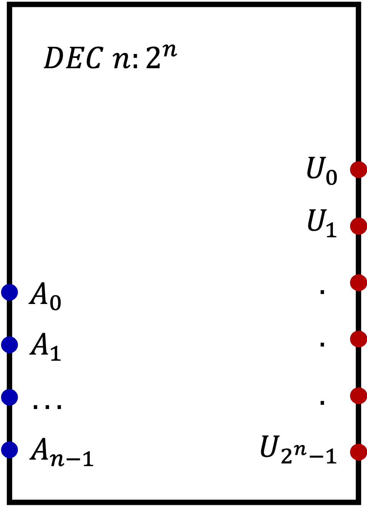
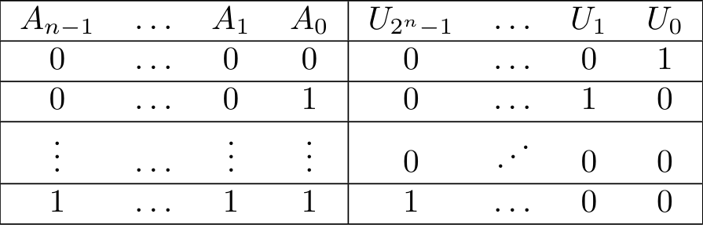
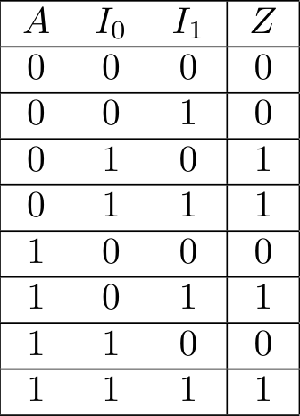
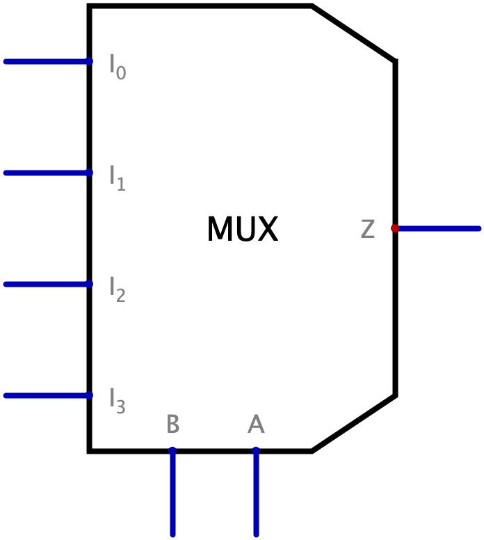

Definizione - Circuiti MSI e LSI
Grazie alla miniaturizzazione dei componenti e all'avvento della MSI e LSI (Medium Scale Integration e Large Scale Integration), è ora possibile progettare utilizzando componenti più complessi al fine di rendere più agevole la progettazione.
Definizione - Decoder \( n:2^{n}\)
Il decoder è una rete combinatoria che trascodifica codice a \( n\) bit in codice "\( 1\) su \( 2^{n}\)".
Un generico decoder è associato alla seguente figura ed il suo comportamento è descritto dalla seguente tabella della verità Gli \( n\) ingressi sono convenzionalmente indicati con \( A_{i}\) (con \( A_{0}\) che è l'indirizzo di minor peso), mentre le uscite sono indicate con \( U_{i}\), con \( i\) che è il numero rappresentato dalla configurazione in ingresso.
Un generico decoder è associato alla seguente figura


Definizione - Sintesi del decoder
Dato che ogni uscita è ad \( 1\) per una sola configurazione di ingresso, si ha che la sintesi SP di ogni uscita è proprio il mintermine corrispondente all'ingresso che la attiva.
Per sintetizzare ogni uscita del decoder, è quindi sufficiente utilizzare un solo gate AND a cui sono collegati propriamente i vari ingressi. Ad esempio, il decoder \( 2:4\) è così sintetizzato
Per sintetizzare ogni uscita del decoder, è quindi sufficiente utilizzare un solo gate AND a cui sono collegati propriamente i vari ingressi. Ad esempio, il decoder \( 2:4\) è così sintetizzato
Da notare che il segnale \( A\) è stato realizzato negando \( A'\) per gestire il fan-out.
Definizione - Fan-out in componenti complessi
L'uscita di ogni componente è caratterizzata da un fan-out, ovvero un numero massimo di ingressi a cui può essere collegata.
Quando si utilizzano componenti complessi di cui si ignora la struttura interna, non è possibile sapere a quanti ingressi sarà poi collegata all'interno: per ovviare a problemi, si utilizzano quindi due NOT in serie per ogni ingresso, i quali forniscono sia il negato del segnale che la rigenerazione del segnale stesso.
Ogni ingresso di ogni componente "consumerà" quindi un solo ingresso.
Quando si utilizzano componenti complessi di cui si ignora la struttura interna, non è possibile sapere a quanti ingressi sarà poi collegata all'interno: per ovviare a problemi, si utilizzano quindi due NOT in serie per ogni ingresso, i quali forniscono sia il negato del segnale che la rigenerazione del segnale stesso.
Ogni ingresso di ogni componente "consumerà" quindi un solo ingresso.
Definizione - Decoder e OR per la sintesi di ogni espressione SP
Utilizzando propriamente un decoder ed un gate OR, è possibile sintetizzare qualsiasi espressione SP in breve tempo.
Ogni decoder, infatti, fornisce in uscita ogni mintermine creabile con \( n\) ingressi. È quindi sufficiente collegare ad un OR i mintermini opportuni per realizzare l'espressione.
Ogni decoder, infatti, fornisce in uscita ogni mintermine creabile con \( n\) ingressi. È quindi sufficiente collegare ad un OR i mintermini opportuni per realizzare l'espressione.
Esempio - Sintesi del full-adder con decoder e OR
Si vuole sintetizzare il full-adder utilizzando un decoder ed un gate OR.
Consideriamo quindi la tabella della verità di questa rete Ora, otteniamo la sintesi SP dell'uscita \( S\) \[ S(a, b, r) = \sum_{3} m(1, 2, 4, 7) \] e dell'uscita \( R\) \[ R(a, b, r) = \sum_{3} m(3, 5, 6, 7) \] È sufficiente quindi collegare ad un OR a \( 4\) ingressi esattamente le uscite corrispondenti a tali mintermini, ovvero
Ora, otteniamo la sintesi SP dell'uscita \( S\) \[ S(a, b, r) = \sum_{3} m(1, 2, 4, 7) \] e dell'uscita \( R\) \[ R(a, b, r) = \sum_{3} m(3, 5, 6, 7) \] È sufficiente quindi collegare ad un OR a \( 4\) ingressi esattamente le uscite corrispondenti a tali mintermini, ovvero
Consideriamo quindi la tabella della verità di questa rete
Definizione - Decoder come circuito integrato
Nella realtà esistono decoder sottoforma di circuito integrato con \( 2\), \( 3\) o \( 4\) bit di indirizzo.
Essi implementano il comportamento del decoder ma aggiungono un ulteriore ingresso, l'\( ENABLE\): se tale ingresso ha valore \( 0\), il componente è disabilitato (ovvero tutte le uscite a \( 0\)).
Essi implementano il comportamento del decoder ma aggiungono un ulteriore ingresso, l'\( ENABLE\): se tale ingresso ha valore \( 0\), il componente è disabilitato (ovvero tutte le uscite a \( 0\)).
Definizione - Decoder \( 4:16\) - Composizione di decoder
Per realizzare decoder con più ingressi, può risultare utile comporre decoder con meno ingressi tra loro.
Ad esempio, per realizzare un decoder \( 4:16\) con solo decoder \( 2:4\) si può utilizzare la seguente rete:
Ad esempio, per realizzare un decoder \( 4:16\) con solo decoder \( 2:4\) si può utilizzare la seguente rete:
Il principio di funzionamento di questa rete è il seguente:
- abbiamo \( 4\) bit significativi in ingresso del tipo \( DCBA\) (quindi il bit \( A\) è quello di minor valore);
- si dividono le \( 16\) uscite in quattro blocchi, in cui ogni blocco aggiunge un "offset" iniziale di \( +4\) dal precedente;
- i due bit più significativi (\( DC\)) determineranno quale dei quattro blocchi sarà attivo (ovvero assegneranno un valore ai due bit);
- una volta scelto il blocco, i due bit meno significativi (\( BA\)) determineranno il risultato finale.
Definizione - Multiplexer a \( 2\) vie
Il multiplexer è una rete combinatoria che è l'equivalente hardware di un "if". e l'espressione minima SP equivalente è \[ Z = A' \cdot I_{0} + A \cdot I_{1} \] da cui lo schema logico
Tale componente ha \( 3\) ingressi:
- due bit di ingresso (dette "vie") \( I_{0}\) e \( I_{1}\);
- un bit di indirizzo \( A\) dal cui valore dipende l'uscita. L'uscita sarà uguale ad \( I_{0}\) se \( A = 0\) mentre sarà uguale a \( I_{1}\) se \( A = 1\).

Definizione - Multiplexer generico
È possibile generalizzare il componente multiplexer ad un componente in cui esistono \( n\) ingressi selettori e \( 2^{n}\) vie.
L'espressione generica per realizzare un generico multiplexer è composta dalla somma dei seguenti prodotti: \[ \sum_{n - 1}^{i} m(i) \cdot I_{i} \] dove \( m(i)\) indica l'\( i\)-esimo mintermine.
Nota bene - Multiplexer a \( 4\) vie
Il multiplexer a \( 4\) vie sarà quindi realizzabile utilizzando la seguente espressione \[ Z = B' \cdot A' \cdot I_{0} + B' \cdot A \cdot I_{1} + B \cdot A' \cdot I_{2} + B \cdot A \cdot I_{3} \] che equivale al seguente schema logico

Definizione - Teorema di espansione di Shannon e espressioni generali
Considerando una funzione di \( n\) variabili binarie, vale la relazione \[ f(x_{0}, \ldots, x_{j}, \ldots, x_{n}) = x_{j} \cdot f(x_{0}, \ldots, 1, \ldots, x_{n}) + \overline{x_{j}} \cdot f(x_{0}, \ldots, 0, \ldots, x_{n}) \] Applicando (ad esempio) per tre volte tale teorema ad una funzione di tre variabili si ottiene \begin{aligned} f(x_{0}, x_{1}, x_{2}) &= \overline{x_{0}} \cdot \overline{x_{1}} \cdot \overline{x_{2}} \cdot f(0, 0, 0) + \overline{x_{0}} \cdot \overline{x_{1}} \cdot x_{2} \cdot f(0, 0, 1) + \\ &+ \overline{x_{0}} \cdot x_{1} \cdot \overline{x_{2}} \cdot f(0, 1, 0) + \overline{x_{0}} \cdot x_{1} \cdot x_{2} \cdot f(0, 1, 1) + \\ &+ x_{0} \cdot \overline{x_{1}} \cdot \overline{x_{2}} \cdot f(1, 0, 0) + x_{0} \cdot \overline{x_{1}} \cdot x_{2} \cdot f(1, 0, 1) + \\ &+ x_{0} \cdot x_{1} \cdot \overline{x_{2}} \cdot f(1, 1, 0) + x_{0} \cdot x_{1} \cdot x_{2} \cdot f(1, 1, 1) \end{aligned} che equivale all'espressione descrittiva di un multiplexer.
Tale espressione è detta espressione generale e permette di rappresentare ogni funzione attraverso un multiplexer.
Tale teorema è valido anche nel caso PS.
Tale espressione è detta espressione generale e permette di rappresentare ogni funzione attraverso un multiplexer.
Tale teorema è valido anche nel caso PS.
Definizione - Multiplexer come rete programmabile
Utilizzando quindi le espressioni generali, è possibile utilizzare un multiplexer a \( n\) vie come generatore di funzioni a \( n\) variabili.
Il multiplexer (in questo caso anche detto LUT (Look-Up Table)) è quindi un generatore di funzioni, ovvero un componente programmabile a cui è sufficiente fornire la tabella della verità di una funzione sulle vie per fargli realizzare il comportamento.
Il multiplexer (in questo caso anche detto LUT (Look-Up Table)) è quindi un generatore di funzioni, ovvero un componente programmabile a cui è sufficiente fornire la tabella della verità di una funzione sulle vie per fargli realizzare il comportamento.
Esempio - Sintesi full-adder con LUT
Si vuole sintetizzare il full-adder utilizzando un multiplexer usato come LUT.
Consideriamo quindi la tabella della verità di questa rete È quindi sufficiente collegare i valori di uscita alla giusta "via", ovvero
È quindi sufficiente collegare i valori di uscita alla giusta "via", ovvero
Consideriamo quindi la tabella della verità di questa rete
Definizione - Multiplexer con \( 4\) bit di selezione - Composizione di multiplexer
Per realizzare multiplexer che gesticono più bit di selezione, può risultare utile comporre multiplexer "meno complessi".
Ad esempio, per realizzare un multiplexer a \( 16\) vie con solo multiplexer a \( 8\) e \( 2\) vie si può utilizzare la seguente rete: Il principio di funzionamento di questa rete è il seguente:
Il principio di funzionamento di questa rete è il seguente:
Ad esempio, per realizzare un multiplexer a \( 16\) vie con solo multiplexer a \( 8\) e \( 2\) vie si può utilizzare la seguente rete:
- abbiamo \( 4\) bit significativi in ingresso del tipo Q3 Q2 Q1 Q0 (quindi il bit Q3 è quello di maggior valore);
- si dividono le \( 16\) possibili configurazioni di ingresso in due blocchi da \( 8\) vie, il primo comprenderà le configurazioni con il bit Q3 = 0 mentre il secondo le configurazioni con il bit Q3 = 1;
- a questo punto si discrimina il risultato sulla base del bit Q3.